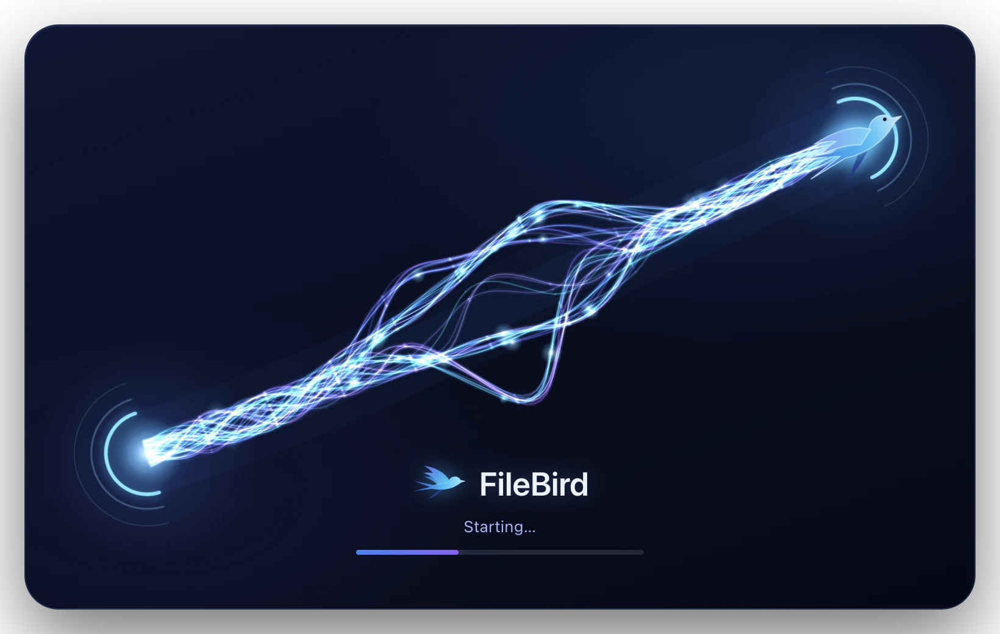
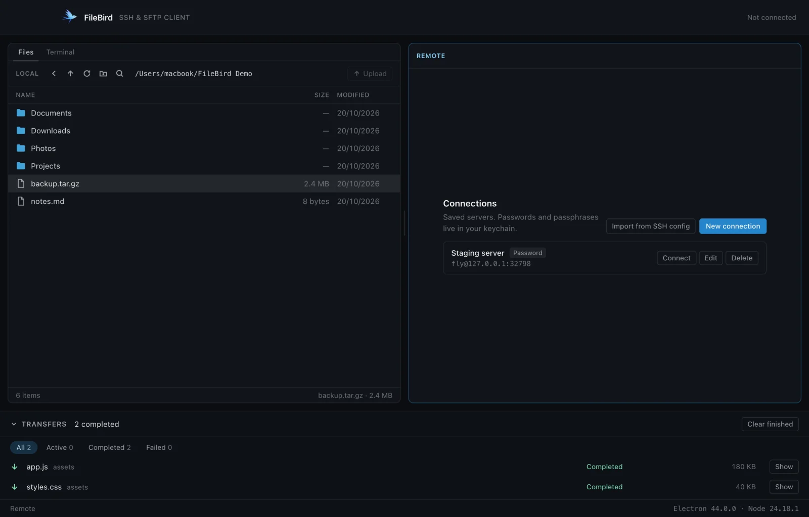
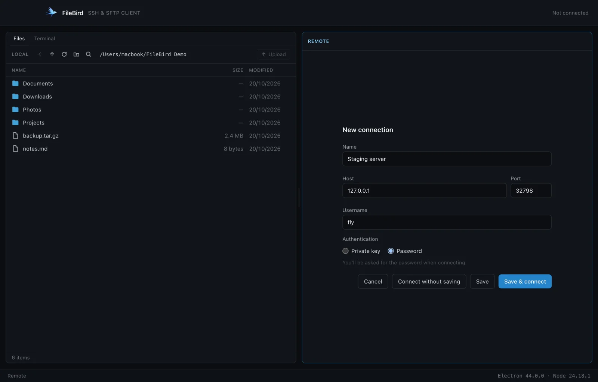
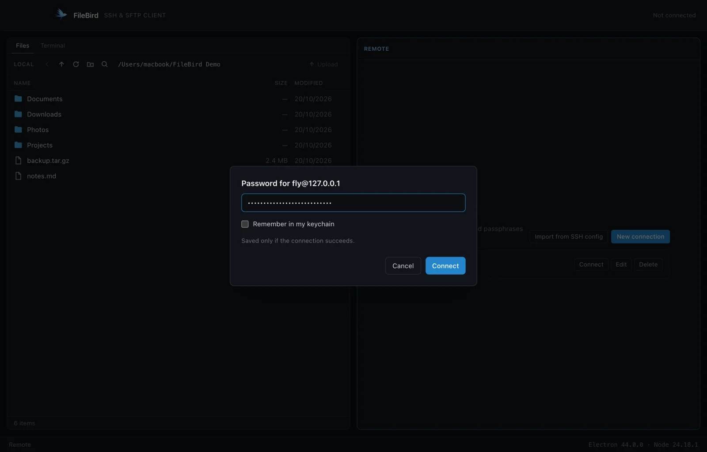
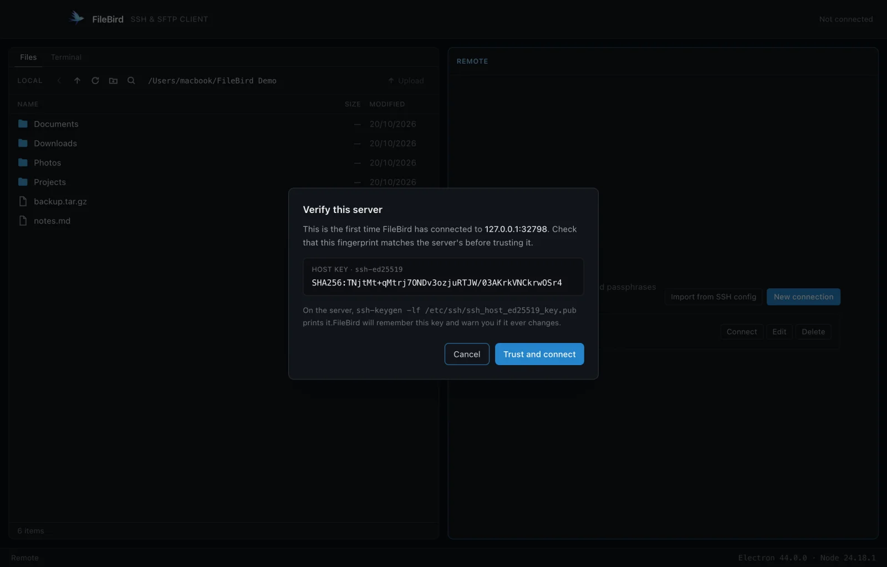
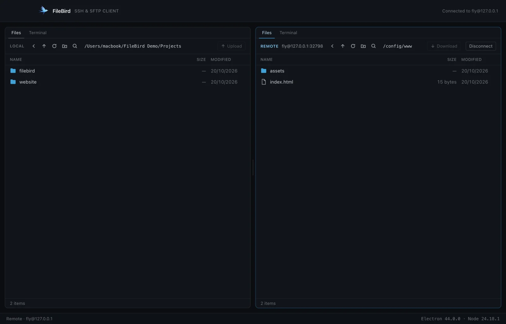
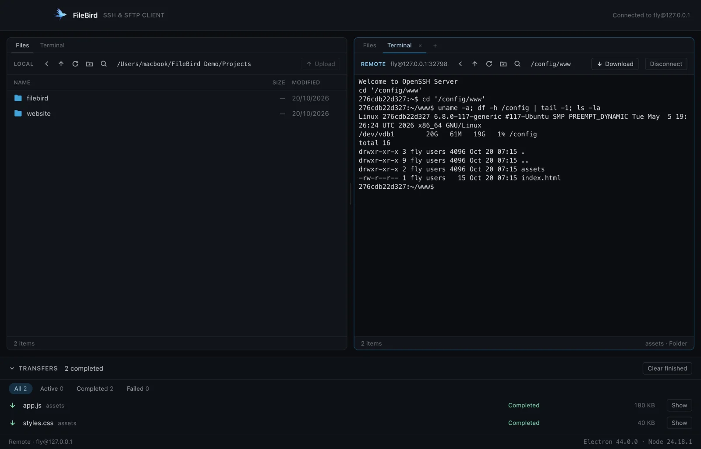
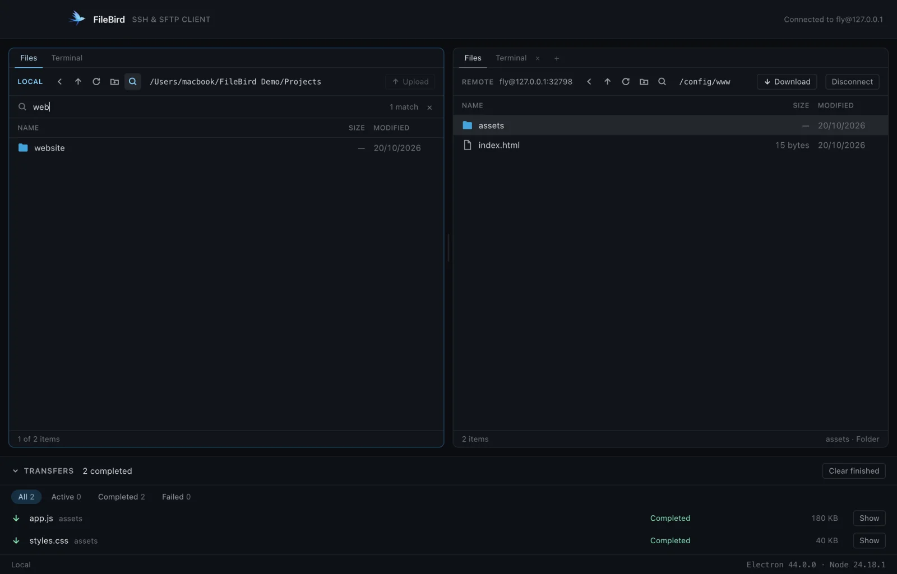
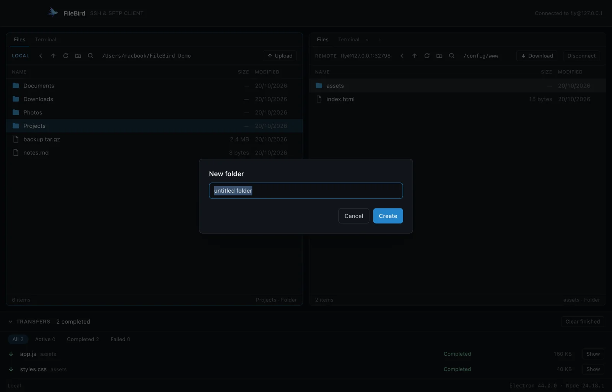
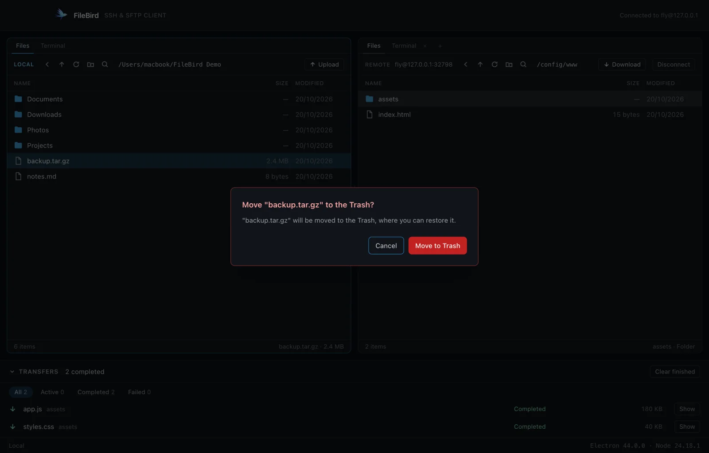

A guided tour
Fourteen steps through the app, from opening it to deleting safely. Every screenshot below is from the running app.
A short animation, then the main window
FileBird starts with a brief animation while it gets ready, then opens to the main window.

Every saved server, with its sign-in and keychain status
The right-hand pane lists every server you have saved, with how you sign in to each and whether its password is already in your keychain. Connect opens it, and each row also offers Edit, Delete and Forget password (or Forget passphrase, for a key). New connection adds one by hand.
If you already use ssh from a terminal, Import from SSH config reads your ~/.ssh/config and lists the hosts it finds, so you can tick the ones you want rather than typing them again.

A name, a host, and either a password or a key
A name, a host, a port and a username, then either a password or a private key. Choosing a key opens a file picker; FileBird reads the key only when you connect, and tells you what it found — the type, its fingerprint, and whether it needs a passphrase.
You can also use Connect without saving for a one-off server.

Asked for at connection time, not stored in the form
Passwords and passphrases are asked for when you connect, not stored in the form. Tick Remember and it goes into your login keychain — but only after the server has accepted it, so a typo never gets saved.

Trusted on first use, after you've seen the fingerprint
The first time you reach a server, FileBird shows you its fingerprint before trusting anything, and refuses to continue until you confirm. From then on that key is checked on every connection.
If a known server's key ever changes, FileBird stops and tells you. There is no "connect anyway" button, because a changed key is exactly what a machine in the middle of your connection would look like.

Local on the left, the server on the right
The pane you last clicked is the active one — it has a brighter border, and menu commands and shortcuts act on it. Cmd/Ctrl+1 and Cmd/Ctrl+2 jump between them, and the divider in the middle drags to give one side more room. FileBird remembers where you left it.

Back, parent folder, refresh, new folder, search
Click a folder to open it. Each pane has Back, Parent folder, Refresh, New folder and Search in its toolbar, and the footer counts what is in view and what you have selected.
Cmd-click (Ctrl on Windows and Linux) adds to the selection; Shift-click extends it; Cmd/Ctrl+A selects everything. Hidden files are shown but dimmed. A folder that takes a moment to open says Opening… rather than looking stuck.

Drop on a row to go inside it
Drag a file or folder from one pane to the other. The label at the bottom names exactly where it will land — drop it on a folder row to go inside that folder, or anywhere else in the pane to use the folder on show.
Dragging within the same pane moves items into a folder instead. Prefer buttons? Select what you want and press Upload or Download (Cmd/Ctrl+T).

Three at a time, with progress, speed and retry
Every transfer joins a queue at the bottom of the window: three files move at a time, each with its own progress and speed. You can Cancel one, Retry a failed one — FileBird reconnects if the server dropped — and filter by Active, Completed or Failed.
Nothing is ever half-written under a real name, and nothing is overwritten unless you say so: a name that already exists asks once for the whole batch — Replace, Keep both or Skip.

No second login, no second password
Each pane has a Terminal tab (Cmd/Ctrl+\`). On the server side it opens a shell over the connection you already have — no second login, no second password, no second host-key question. On your own side it opens a shell on your machine.
It is a real terminal, so sudo, vim, top and anything else full-screen work normally.

Side by side, or stacked, nested as deeply as you like
Split Vertically (Cmd/Ctrl+D) puts two shells side by side; Split Horizontally (Cmd/Ctrl+Shift+D) puts one above the other. Add Tab (Cmd/Ctrl+Shift+T) starts another terminal tab.
A pane runs up to eight shells on your own machine and four on a server — a server allows only so many channels on one connection, and FileBird leaves room for your transfers.

The list narrows as you type
Press Cmd/Ctrl+F or click the magnifier and the list narrows as you type. The footer keeps count ("3 of 128 items"). Enter hands the list back to the keyboard with the first match selected, Escape clears it, and opening another folder starts fresh.

Checked as you type, before the server refuses
New folder sits in each pane's toolbar (Cmd/Ctrl+Shift+N), and F2 renames whatever is selected. Names are checked as you type against the rules of the side you are on. A rename never replaces something that already exists.

Local goes to the Trash; remote is permanent
Delete (or Cmd+Backspace on a Mac) removes what is selected, after asking. On your own machine, items go to the Trash, where you can get them back — FileBird never deletes local files permanently. On a server there is no Trash, so deleting really is permanent, and the question says so plainly.
Your home folder, the drive's root and any folder containing them are refused outright, on either side.

Everything FileBird does
Connecting
- Saved servers with password or private-key sign-in (
ed25519,rsa,ecdsa). - Passwords and passphrases in the OS keychain, saved only after they work.
- One-way import from
~/.ssh/config, includingIdentityFile. - Server identities trusted on first use; a changed key is a hard stop.
Files
- Two independent panes, each with its own history, selection, search and zoom.
- Hidden files shown and dimmed; links marked; broken links obvious.
- Per-pane zoom from 75% to 200%, remembered between runs.
- New folder, rename, delete, and move by dragging within a pane.
Transfers
- Files and whole folder trees, in both directions.
- A queue: three at a time, progress, speed, cancel, retry that reconnects.
- Conflicts asked once per batch: Replace, Keep both, Skip.
- Safe writes — an interrupted transfer never leaves a half-file under the real name.
- Quitting with transfers running asks first.
Terminals
- A shell per pane, as tabs; up to eight locally, four per server.
- Split side by side or stacked, nested as deeply as you like.
- Remote shells run over the existing connection; local ones are real pseudo-terminals.
- Output is throttled, and nothing a terminal shows is ever written to a log.
Keyboard shortcuts
| Cmd/Ctrl+1 / Cmd/Ctrl+2 | Focus the local / remote pane |
| Cmd/Ctrl+R | Refresh |
| Cmd+[ / Alt+Left | Back |
| Cmd+↑ / Alt+Up | Parent folder |
| Cmd/Ctrl+T | Transfer the selection to the other side |
| Cmd/Ctrl+F | Search this folder |
| Cmd/Ctrl+A | Select all |
| Cmd/Ctrl+Shift+N | New folder |
| F2 | Rename |
| Delete / Cmd+Backspace | Delete |
| Cmd/Ctrl+` | Switch between Files and Terminal |
| Cmd/Ctrl+Shift+T | Add a terminal tab |
| Cmd/Ctrl+D | Split the terminal vertically (side by side) |
| Cmd/Ctrl+Shift+D | Split the terminal horizontally (one above the other) |
| Cmd/Ctrl+= / Cmd/Ctrl+- / Cmd/Ctrl+0 | Zoom this pane in / out / back to 100% |